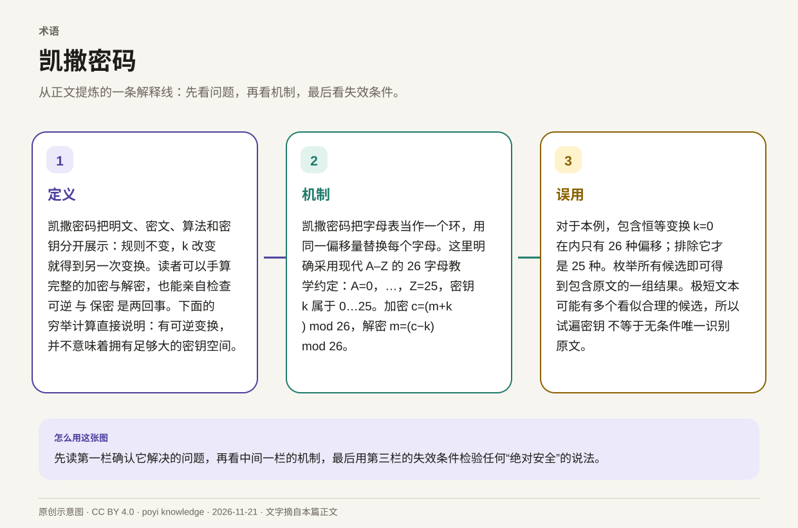

原理与机制
凯撒密码把字母表当作一个环，用同一偏移量替换每个字母。这里明确采用现代 A–Z 的 26 字母教学约定：A=0，…，Z=25，密钥 k 属于 0…25。加密 c=(m+k) mod 26，解密 m=(c−k) mod 26。相同明文字母总变成相同密文字母，它属于单表替换。
例如 k=3 时，A→D，X→A，HELLO→KHOOR。这里的 mod 是取 0…25 范围内的余数；解密时须处理负数。空格、大小写和标点如何处理，是实现约定，不是公式已经规定的内容。

为什么重要
它把明文、密文、算法和密钥分开展示：规则不变，k 改变就得到另一次变换。读者可以手算完整的加密与解密，也能亲自检查可逆与保密是两回事。下面的穷举计算直接说明：有可逆变换，并不意味着拥有足够大的密钥空间。
应用与实例
本条把它用于教学与字母谜题，不作为现实信息保护方案。做题时先约定字母表和偏移方向，再逐字替换，最后用同一约定解密验证。不要把本例的 26 字母约定倒推成古罗马实际字母表或通信格式。
边界与攻击面
对于本例，包含恒等变换 k=0 在内只有 26 种偏移；排除它才是 25 种。枚举所有候选即可得到包含原文的一组结果。极短文本可能有多个看似合理的候选，所以试遍密钥不等于无条件唯一识别原文。更长的自然语言文本还会留下重复和频率线索。
历史与背景
名称与尤利乌斯·凯撒相关。苏埃托尼乌斯《凯撒传》第 56 节记述了凯撒在保密信件中改变字母，并给出 D 对应 A 的描述。这里把它作为古代文字记录引用，不据此宣称凯撒发明了替换密码，也不把现代公式当作原始文献中的写法。
参考出处
- Chris Savarese and Brian Hart, The Caesar Cipher, Trinity College
- Suetonius, The Life of Julius Caesar, §56.6, J. C. Rolfe translation; Lexundria transcription
- A. Menezes, P. van Oorschot and S. Vanstone, Handbook of Applied Cryptography, CRC Press, 1996, Chapter 7
- Duke University, Math Everywhere, Cryptography — Course Notes